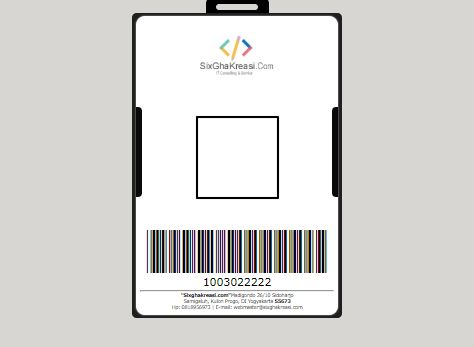

Gallery
My Portfolio
- My Portofolio

Saya seorang mahasiswa Teknik Informatika semester 5 di Universitas Sebelas April Sumedang. Saya memiliki ketertarikan dibidang Pemrograman Web tepatnya dibagian Back-End. Saya memiliki pengalaman kerja sebagai Staff IT di PT. Fukoku Tokai Rubber Indonesia selama 2 tahun sebelum saya kuliah, setelah saya bekerja selama 2 tahun saya pun melanjutkan kuliah dibidang yang sama untuk meningkatkan Skill dan Karir. Saya aktif dalam organisasi kampus untuk menumbuhkan jiwa kepemimpinan saya atau Personality saya di BEM Fakultas sebagai Sekretaris, Kepala Department Bidang Media & Konten Kreatif di Himpunan Mahasiswa lalu menjadi pengurus di UKM Fotography sebagai Koordinator Peralatan.